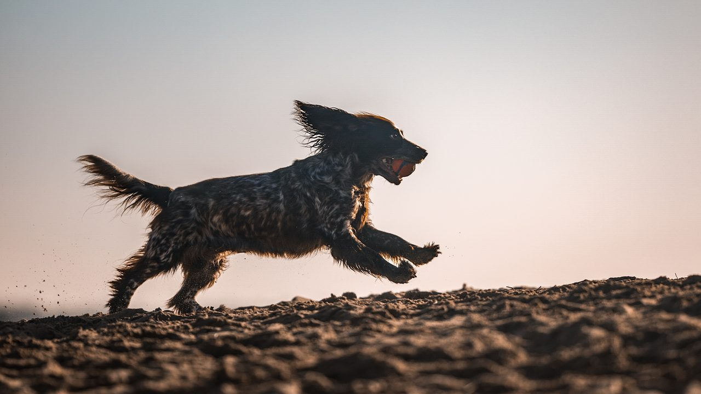

About the kennel
Named for a bright one
Kennel de Zeta Centauri began with one spaniel who changed everything.

The copy below is placeholder, written from your own blog posts to hold the right shape and voice. You'll replace it with your final words.
Nell — “the bright one”
Nell's official kennel name was Zeta Centauri, “the bright one.” She was charming, intense and entirely herself — and she taught us, year after year, how dogs actually think. She also carried insecurities that likely traced back to a puppyhood from a time when the knowledge simply wasn't there yet.
The more we learned, the stronger the wish became to do better — to give a litter the calm, confident, trusting start Nell didn't have. If we only do this once, we want to do it as close to right as we can.
What we breed for
Not the trophy wall. We breed for temperament, scenting ability and sound minds — dogs who can settle, cope with frustration, and meet the world without fear. The sniffing spaniel in our logo is a deliberate choice: where other kennels nod to the gun, ours nods to the nose, because nosework is our focus and our joy.
How we raise them
Puppies grow up underfoot, in the rhythm of a real home, with early experiences chosen to build resilience and self-regulation. We lean on what the evidence says about those first weeks, and we favour autonomy and choice — the belief that a dog does best when it can safely influence the outcomes in its own life.
Where we are
We live in North Holland, the Netherlands. Many of these photos were taken nearby, in coastal dune country — pine, marram grass and sea-buckthorn — where our dogs love to put their noses to work.
“She might be physically gone, but she will always live in our hearts — and in Grace and her puppies. Auntie Nell's legacy is always present.” From the BusyDoggie blog